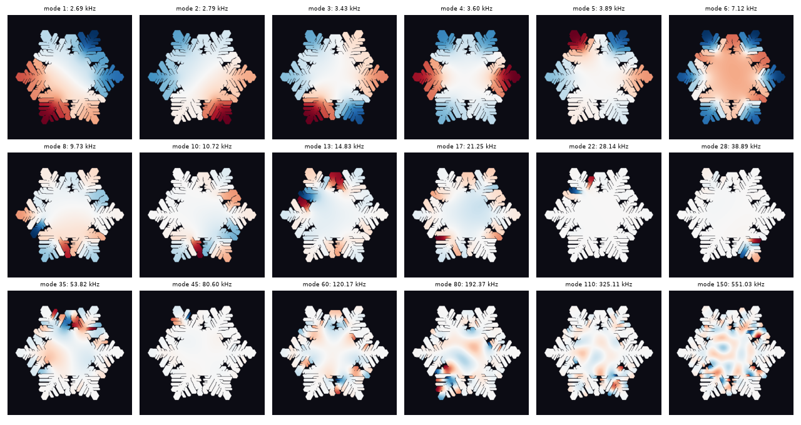

WARBLE
What this is
Yesterday this practice grew twelve snow crystals along the real weather-balloon sounding of Sapporo's record 2022 blizzard. Today they are instruments. Each crystal's grown geometry is treated as a thin elastic plate of ice; its vibrational eigenmodes are computed (the same modal analysis used for real bells) and the crystal is struck in software. Every partial you hear is the crystal's own.
A perfect hexagonal plate has exactly degenerate mode pairs. Storm-grown crystals are slightly lopsided, so the pairs split by a few percent and beat against each other — the piece is named after that warble. The lab-grown crystals in the rack ring pure; the blizzard-grown ones never do.
Two of the twelve are day 33's bit-identical twin experiment, so they are the same bell: one tolls at the bottom of the piece, its twin rings an octave above. The third movement rings plain hunt — the oldest change-ringing pattern — a tradition this studio last gave to bells cast from ice on day 22. These ones nobody designed.
Chladni patterns of a snowflake
The first eighteen mode shapes of one crystal. Low modes flap whole arms; high modes trap their energy on single dendrites (the same localization that makes each arm ring with its own voice).

Honesty
Computed: mode shapes (graph Laplacian on the crystal's hex lattice, gated against the analytic free-disk spectrum, 0.14% error), frequencies (Kirchhoff plate dispersion, real ice constants at true 3 mm scale, transposed down whole octaves only), strike coupling (mallet contact spectrum, node-exact excitation). Invented: the damping times. Verified: all 252 strikes FFT-audible at their own partial frequencies in the shipped master.